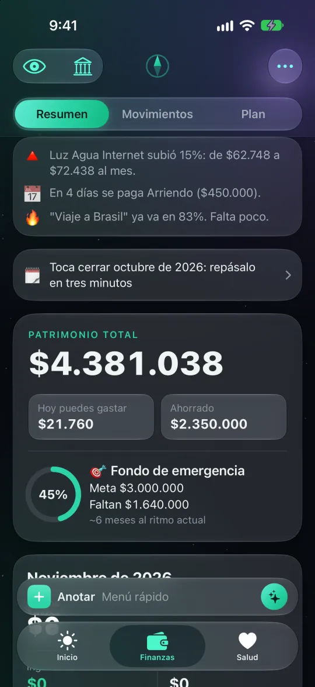
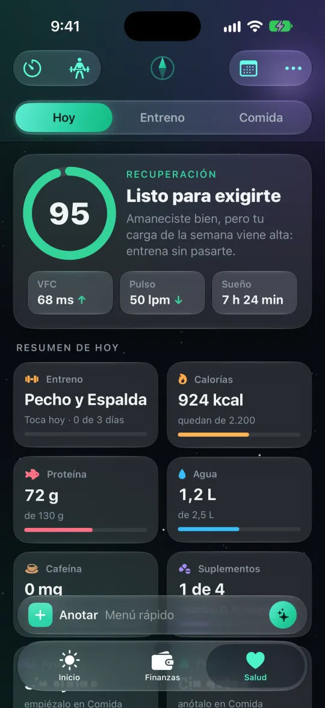
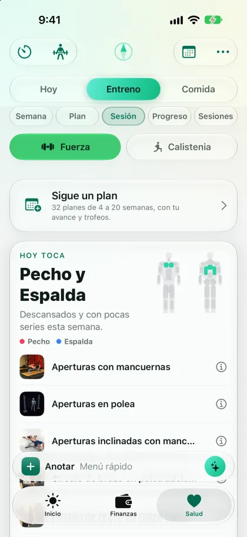
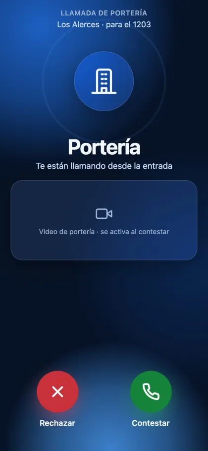
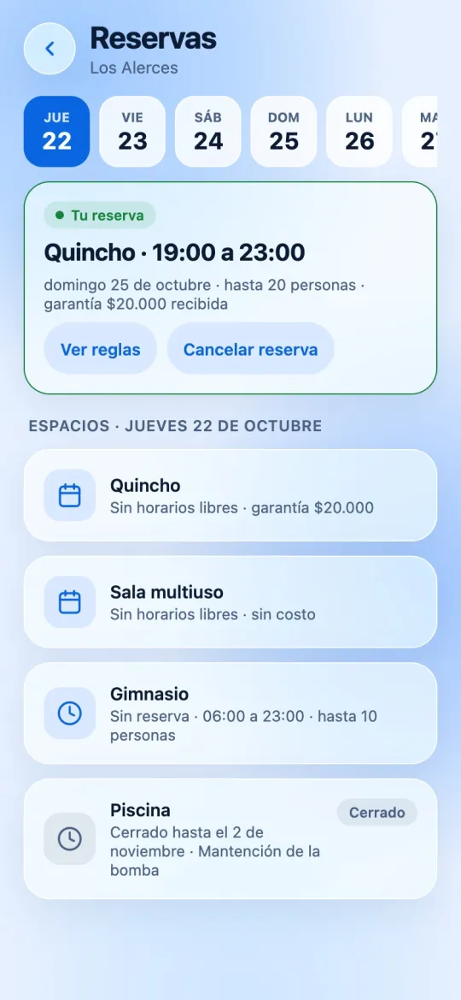
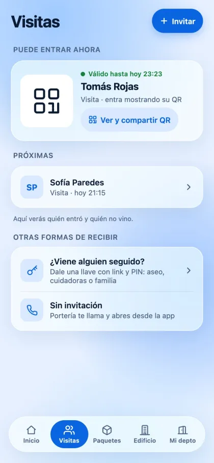
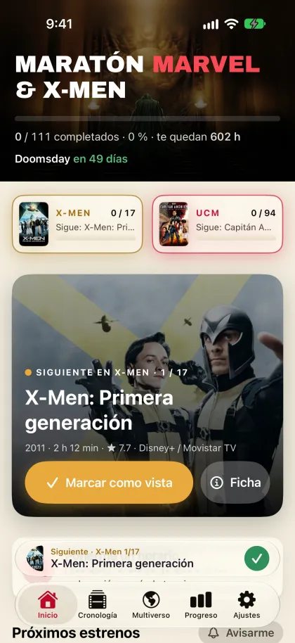
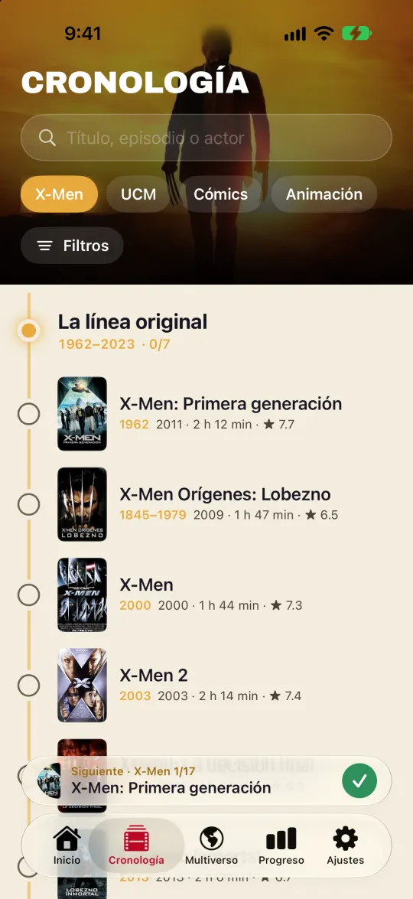
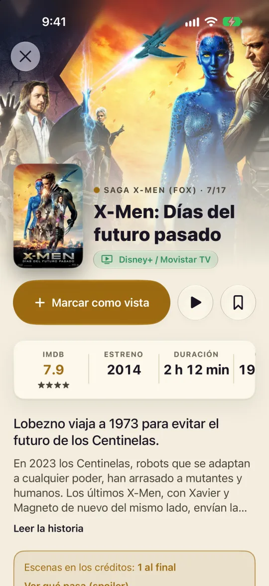

iPhone apps: Norte, Citofonía and Maratón Marvel
Three mobile products I designed and built with coding agents, each on a different stack. These are real screens, not design mockups.
Norte
A personal app that brings finances, training, nutrition and habits together. It is native SwiftUI with no third-party dependencies, with Apple Watch and widget targets, a Next.js API over SQLite, and Claude for analysis.

Finances
Health
TrainingCaptured in the iPhone simulator against a local test server with seeded demo data. None of these figures are real.
More than 280 Swift files, over 80 of them tests. The screen tests refuse to run against production. The source is private.
Citofonía
The building intercom on your phone: concierge calls, door opening, QR visits, parcels, reservations and votes, with a tablet for the concierge and a panel for administrators. It is in development, built with React Native and Expo, Hono, Supabase and LiveKit for calls.

Concierge call
Reservations
VisitsReal captures of the app with a fictional building and fictional residents.
23 resident screens, 9 for the concierge and 17 admin pages over 105 database migrations. CI runs type checks, pgTAP, Vitest and end-to-end tests. The source is private.
Maratón Marvel
Every Marvel and X-Men title in story order, with progress tracking: more than 140 titles, counting comics and animation, and 1,600 episodes. The web app is live and free. A native SwiftUI version is in development, and that is the one shown here.

Home
Timeline
Title pageCaptured in the iPhone simulator. Film images belong to their studios.